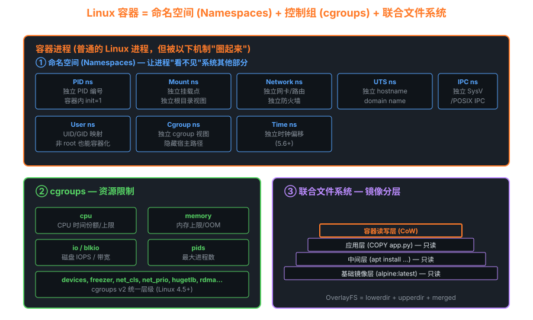

11容器内核机制 — Namespaces、Cgroups、OverlayFS
Docker / Kubernetes 是包装，容器的真正实现完全在 Linux 内核里：8 种命名空间 + cgroups + 联合文件系统。本章揭开"容器"魔术。
11.1 容器解剖图

容器 = Namespaces (隔离视图) + Cgroups (限制资源) + UnionFS (分层镜像)
11.2 8 种命名空间
| 类型 | 引入 | 隔离什么 | 验证 |
|---|---|---|---|
| Mount (mnt) | 2.4.19 | 挂载点视图 | cat /proc/self/mounts |
| UTS | 2.6.19 | hostname / domainname | hostname |
| IPC | 2.6.19 | SysV IPC / POSIX 消息队列 | ipcs |
| PID | 2.6.24 | 进程编号空间 | 容器内 init = pid 1 |
| Network (net) | 2.6.29 | 网卡/路由/防火墙/socket | ip link |
| User | 3.8 | UID/GID 映射 | id 在容器内 root 实际是宿主 uid 100000 |
| Cgroup | 4.6 | cgroup 层级视图 | cat /proc/self/cgroup |
| Time | 5.6 | CLOCK_MONOTONIC 偏移 | uptime |
11.3 创建命名空间的系统调用
/* 1. clone() 创建新进程时同时创建 ns */ clone(child_fn, stack, CLONE_NEWPID | // 新 PID ns CLONE_NEWNET | // 新 net ns CLONE_NEWNS | // 新 mount ns CLONE_NEWUTS | // 新 UTS ns CLONE_NEWIPC | // 新 IPC ns CLONE_NEWUSER | // 新 user ns SIGCHLD, arg); /* 2. unshare() 把当前进程切到新 ns */ unshare(CLONE_NEWNET); // 当前进程从此在独立 net ns /* 3. setns() 加入已有 ns (Docker exec 用) */ int fd = open("/proc/1234/ns/net", O_RDONLY); setns(fd, CLONE_NEWNET);
# 命令行版本 unshare --pid --fork --mount-proc /bin/bash # 新 PID ns 的 shell nsenter -t 1234 -n ip addr # 进入进程 1234 的 net ns # 实际看看自己的所有 ns ls -l /proc/self/ns/ # lrwxrwxrwx 1 root root 0 cgroup -> 'cgroup:[4026531835]' # lrwxrwxrwx 1 root root 0 ipc -> 'ipc:[4026531839]' # lrwxrwxrwx 1 root root 0 mnt -> 'mnt:[4026531840]' # lrwxrwxrwx 1 root root 0 net -> 'net:[4026531992]' # lrwxrwxrwx 1 root root 0 pid -> 'pid:[4026531836]' # lrwxrwxrwx 1 root root 0 user -> 'user:[4026531837]' # lrwxrwxrwx 1 root root 0 uts -> 'uts:[4026531838]'
11.4 PID 命名空间深入
同一个进程，两个 PID
容器内 nginx 显示 pid = 1，但宿主机上 ps 看到的可能是 pid = 12345。
这不是 bug，是 PID ns 设计：每个 PID ns 内进程从 1 开始编号。
struct task_struct { /* ... */ struct pid *thread_pid; // pid 结构 }; struct pid { refcount_t count; unsigned int level; // 嵌套层数 (容器内套容器) struct upid numbers[1]; // 每层一个 upid }; struct upid { int nr; // 在该 ns 内的 pid struct pid_namespace *ns; // 所属 ns }; // → 同一个进程在不同 ns 看到不同 pid
11.5 网络命名空间与 veth pair
每个 net ns 拥有独立的整套网络栈：网卡、路由表、iptables 规则、socket。容器内"看到的"网卡完全独立。
# 手工搭建容器网络 (Docker 内部做的事) ip netns add c1 # 新 net ns # 创建 veth pair (像虚拟网线两端) ip link add veth0 type veth peer name veth1 # 把 veth1 塞进 c1 ns ip link set veth1 netns c1 # 配置两端 IP ip addr add 10.0.0.1/24 dev veth0 ip link set veth0 up ip netns exec c1 ip addr add 10.0.0.2/24 dev veth1 ip netns exec c1 ip link set veth1 up # 测试连通 ping 10.0.0.2 # 从宿主 ip netns exec c1 ping 10.0.0.1 # 从容器 # 接入网桥让多个容器互通 (docker0) ip link add br0 type bridge ip link set veth0 master br0 ip link set br0 up
11.6 cgroups v2 详解
cgroups 控制多少资源（v1 旧、v2 新统一）。v2 单一层级树，每个 cgroup 是一个目录：
# cgroup v2 挂载点 mount | grep cgroup2 # cgroup2 on /sys/fs/cgroup type cgroup2 (rw,nosuid,nodev,noexec,relatime,nsdelegate) # 创建一个 cgroup mkdir /sys/fs/cgroup/my_app # 启用控制器 echo "+cpu +memory +io +pids" > /sys/fs/cgroup/cgroup.subtree_control # 加进程进来 echo $$ > /sys/fs/cgroup/my_app/cgroup.procs # 各项限制 echo "200000 1000000" > /sys/fs/cgroup/my_app/cpu.max # 20% CPU echo 536870912 > /sys/fs/cgroup/my_app/memory.max # 512MB echo 100 > /sys/fs/cgroup/my_app/pids.max echo "8:0 rbps=1048576" > /sys/fs/cgroup/my_app/io.max # 1MB/s # 当前用量 cat /sys/fs/cgroup/my_app/memory.current cat /sys/fs/cgroup/my_app/cpu.stat
11.7 OverlayFS — 镜像分层的魔法
# 三个目录 mkdir /tmp/{lower,upper,work,merged} echo "base" > /tmp/lower/file1 echo "changed" > /tmp/upper/file1 # 同名覆盖 echo "only" > /tmp/upper/file2 # 挂载 overlay mount -t overlay overlay \\ -o lowerdir=/tmp/lower,upperdir=/tmp/upper,workdir=/tmp/work \\ /tmp/merged ls /tmp/merged # file1 file2 cat /tmp/merged/file1 # changed ← upper 覆盖了 lower # 在 merged 里写 → 实际写到 upper (Copy-on-Write) echo "new" >> /tmp/merged/file1 cat /tmp/upper/file1 # changed\nnew cat /tmp/lower/file1 # base (没动!)
Docker 镜像每层就是一个 lowerdir，最顶上的容器读写层是 upperdir。删除文件用 "whiteout" 特殊文件标记。
11.8 一个 75 行的 "mini docker"
/* mini_container.c — 演示容器原理的最小实现 */ #define _GNU_SOURCE #include <sched.h> #include <sys/wait.h> #include <sys/mount.h> #include <sys/utsname.h> #include <stdio.h> #include <unistd.h> static char stack[1024*1024]; int child_main(void *arg) { // 1. 改 hostname sethostname("in-container", 12); // 2. 切根目录 (类似 chroot) chdir("/rootfs"); chroot("."); // 3. 挂载新 proc (PID ns 需要) mount("proc", "/proc", "proc", 0, NULL); // 4. 跑 shell char *argv[] = { "/bin/sh", NULL }; execv("/bin/sh", argv); return 1; } int main() { int flags = CLONE_NEWPID | CLONE_NEWNS | CLONE_NEWUTS | CLONE_NEWIPC | CLONE_NEWNET | SIGCHLD; int pid = clone(child_main, stack + sizeof(stack), flags, NULL); waitpid(pid, NULL, 0); return 0; } /* 编译: gcc -o mini mini_container.c 运行 (需 root): sudo ./mini */
看懂这个，你就懂了 Docker
runc (Docker 底层运行时) 比这个复杂 100 倍，但核心机制就是上面 4 步：clone 多个 NS → chroot → 挂载 proc → exec。剩下的是镜像分层 (OverlayFS)、网络配置 (veth)、资源限制 (cgroups)。